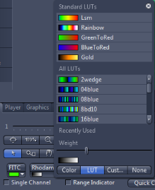

- Generated by
 1.8.14
1.8.14
|
libCZI
Reading CZI documents made easy
|
Listing some features and ideas that did not make it into this version. This list is of course not exhaustive.
| feature | comment |
|---|---|
| support for Gray32Float | The pixeltype Gray32Float (in fact, all but Gray8, Gray16, Bgr24 and Bgr48) is not supported with ComposeMultiChannel_Bgr24. Also, the simple conversion (with the Get-method of accessors) is not implemented for all pixeltypes. |
| support for "tinting LUTs" | This feature of display-settings in ZEN is not yet implemented:

tinting lut in ZEN |
| domain objects for metadata | for accessing the metadata there is very little support (besides parsing the XML by hand) |
| performance | Performance has not been a priority so far. Performance has many aspects, and as far as the library (and its anticipated use) is concerned, it is expected that the most important task is to provide caching. Besides, in the composition the use of SIMD-code would surely be beneficial. |
| sub-block metadata | Currently no domain objects for sub-block metadata, only raw-XML is accesible. |
| support for mask | Support for the "valid pixel mask"-feature is not implemented. |
| multi-channel-composition for pixeltype Bgr48 | This would be a function akin to ComposeMultiChannel_Bgr24 ⇒ ComposeMultiChannel_Bgr48. |
Besides those features which are missing somewhat undisputed, there are of course a lot of ideas what could be added. Here are some ideas listed:
| feature | comment |
|---|---|
| bindings | Provide bindings and samples for popular languages and software (Java, Python, MatLab, Mathematica, ImageJ, OpenCV, ...) |
| support for authoring CZI-files | Writing CZIs should not be harder than reading them |
1.8.14